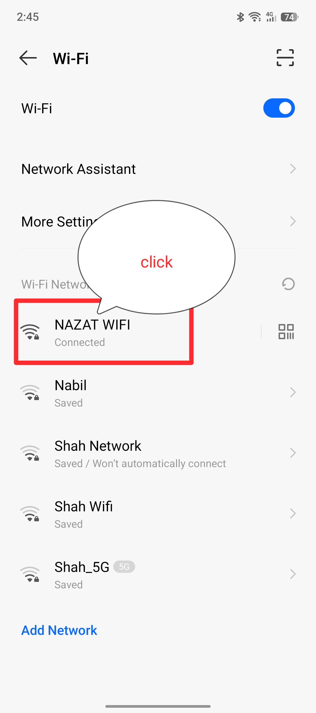
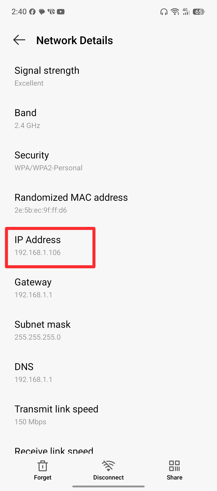
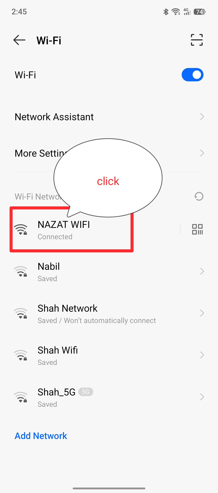
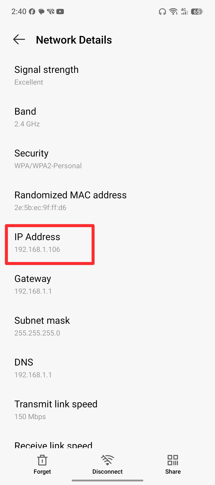

Step 1: Unlock Developer Mode
ধাপ ১: ডেভেলপার মোড আনলক করুন
Open your phone's Settings. Go to My Phone / About Phone. Find the Build Number and tap on it rapidly 7 times.
আপনার ফোনের Settings ওপেন করে My Phone / About Phone-এ যান। সেখানে Build Number লেখাটির ওপর দ্রুত ৭ বার ট্যাপ করুন।


 


